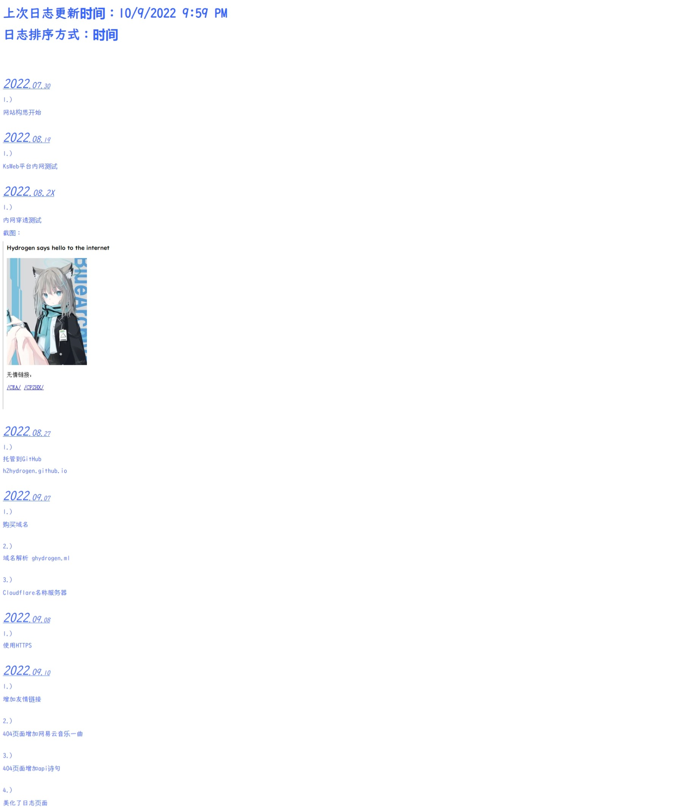

上次日志更新时间：11/9/2022 1:40 PM
日志排序方式：时间
2022.07.30
1.)
网站构思开始
2022.08.19
1.)
KsWeb平台内网测试
2022.08.2X
1.)
内网穿透测试
截图：{
}
2022.08.27
1.)
托管到GitHub
h2hydrogen.github.io
2022.09.07
1.)
购买域名
2.)
域名解析 ghydrogen.ml
3.)
Cloudflare名称服务器
2022.09.08
1.)
使用HTTPS
2022.09.10
1.)
增加友情链接
2.)
404页面增加网易云音乐一曲
3.)
404页面增加api诗句
4.)
美化了日志页面
截图：{

}
5.)
在日志页面的截图外添加圆括号?{}?
6.)
在日志页面中，添加了分点?N.)?
7.)
在日志页面中，把问号???作为保留符号，用来标注格式
2022.09.11
1.)
完成致谢网页